Notebook source code:
notebooks/02_foundations__connection_riemannian_metric.ipynb
Run it yourself on binder

\(\textbf{Lead Author: Adele Myers}\)
Inspired by: Guigui, Miolane, Pennec, 2022. Introduction to Riemannian Geometry and Geometric Statistics: from basic theory to implementation with Geomstats.
In this section, we will:
Define the Connection
Discuss parallel vector fields and parallel transport
Define Geodesics with the Connection
Define the Connection in Local Coordinates (with Christoffel Symbols)
Discuss Logarithms and Exponentials
Give an overview of the Connection Class in Geomstats
Discuss the RiemannianMetric subclass of the Connection Class
This notebook provides an overview of the \(\textbf{Connection}\) class in Geomstats. Intuitively: a connection is a mathematical operator that tells you how much a vector will change when you move it along a manifold in the direction of another vector. The symbol for connection is \(\nabla\), and \(\nabla_{\vec{u}} \vec{v}\) denotes how much vector \(\vec{v}\) would change if you moved it an infinitesimal distance in the direction of vector \(\vec{u}\) (see figure below).
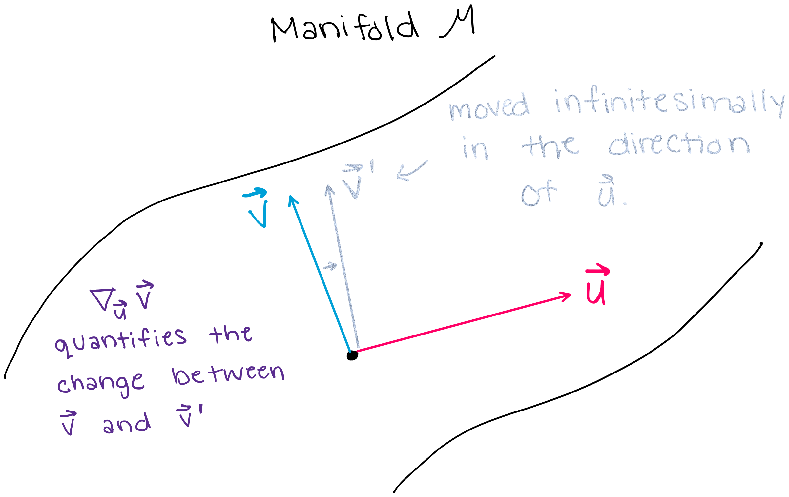
1. What is a Connection?#
We will start by defining the connection \(\textit{mathematically}\), and then we will define the connection again in a more \(\textit{conceptual and intuitive}\) way with examples.
1.1 General Mathematical Definition of the Connection#
Let \(M\) be a smooth manifold. A \(\textbf{connection}\) on \(M\) is an \(\mathbb{R}\)-bilinear map \(\nabla: \Gamma (T M) \times \Gamma (T M) \to \Gamma (T M)\) that verifies for all \(X,Y \in \Gamma (T M), \forall f \in C^\infty(M)\):
(linearity of the \(1^{st}\) argument): \(\nabla_{f X} Y = f \nabla_{X} Y\)
(Leibniz rule in \(2^{nd}\) argument): \(\nabla_{X} (fY) = X(f)Y+ f\nabla_{X} Y\)
\(\textbf{What is this saying}:\)
\(\textbf{1. First, let's dissect the map}\) \(\nabla: \Gamma (T M) \times \Gamma (T M) \to \Gamma (T M)\).
“\(\nabla:\)” - this part is saying that it is the connection (denoted \(\nabla\)) that is performing the transformation.
“\(T M\)” - this symbolizes the \(\textbf{tangent bundle}\) of the manifold \(M\). A tangent bundle is the collection of all tangent spaces on the manifold \(M\). A tangent bundle is itself also a manifold.
“\(\Gamma(T M)\)” - \(\Gamma(T M)\) denotes the space of vector fields. A single element of \(\Gamma(T M)\) is a single vector field on the manifold \(M\). A vector field is comprised of a set of vectors on the manifold, where there is a vector at each point, and that vector is an element of the tangent space at that point (shown below).
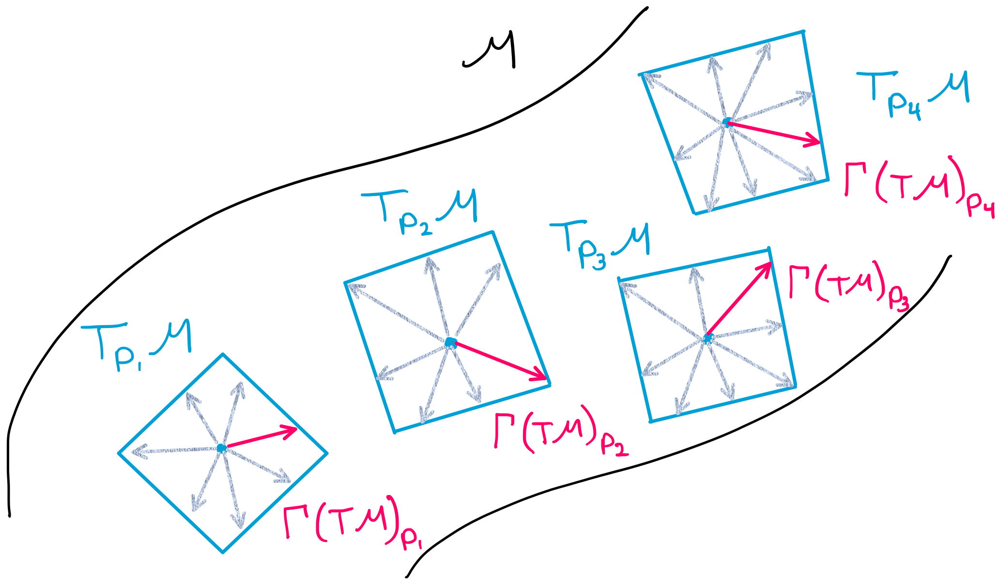
Putting all of this together, \(\nabla: \Gamma (T M) \times \Gamma (T M) \to \Gamma (T M)\) is simply saying that the connection is a transformation which takes two arguments, both of which are vector fields (comprised of tangent vectors), and the result of the transformation is another vector field (comprised of tangent vectors).
\(\textbf{2. Now, let's consider the conditions that the connection must satsify.}\) 1. (linearity of the \(1^{st}\) argument): \(\nabla_{f X} Y = f \nabla_{X} Y\)
(Leibniz rule in \(2^{nd}\) argument): \(\nabla_{X} (fY) = X(f)Y+ f\nabla_{X} Y\)
Here, there is not much to dissect mathematically, but we should wonder why the connection must satisfy the conditions. The vector field \(\nabla_{X} Y\) (remember \(X\) and \(Y\) are vector \(\textit{fields}\)) is also called the \(\textbf{covariant derivative}\) of \(Y\) with respect to \(X\). If we think of \(\nabla_{X}\) as a derivative of some sort, then it makes sense that \(\nabla_{X}\) would have to follow a set of rules. Condition 1 is the equivalent of saying \(\frac{d(fX)}{dx}=f\frac{d(X)}{dx}\) in euclidean space. Similarly, condition 2 is the differential geometry equivalent of the product rule: \(\frac{d(u*v)}{dx}= \frac{d(u)}{dx}*v +u*\frac{d(v)}{dx}\). In summary, the connection must follow rules just as our familiar derivative must follow rules, and these rules have a similar form.
1.2 What does the Connection actually do? – a more friendly description of the connection, with an example#
Consider a single vector \(\vec{a_p}\), tangent to the manifold at point \(p\) (shown in the figure below).
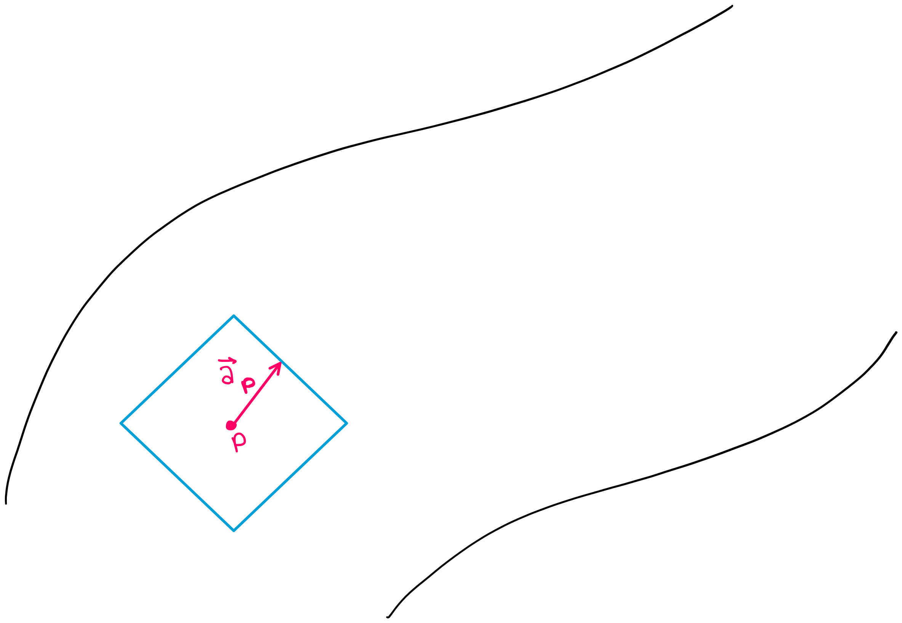
Now, suppose you want to see what vector \(\vec{a_p}\) looks like when it is translated to a different point on the manifold. You may be asking why we are placing importance on this question– because for a vector in cartesian coordinates, this question would be trivial. If you translated vector \(\vec{a_p}\) to a different point in cartesian coordinates, the vector itself would not change (as shown in the figure below).
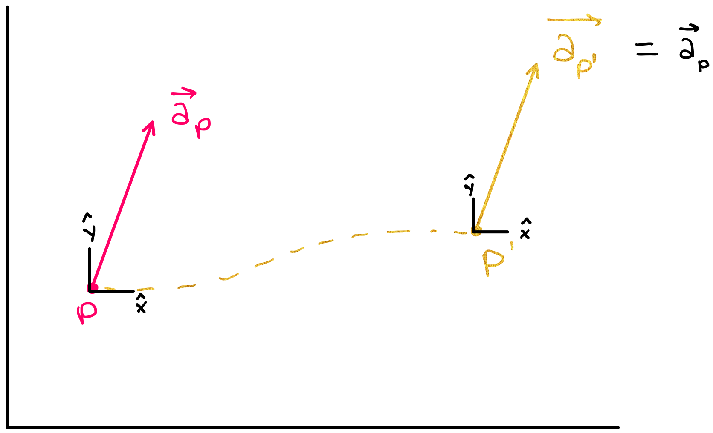
A spatially translated vector in cartesian coordinates does not change because the basis vectors in cartesian coordinates are translationally invariant, meaning all points in cartesian coordinates have the same set of basis vectors.
This is not, however, necessarily true for points on a manifold– if you move a tangent vector from one point to another (i.e. from one tangent space to another), the vector will not necessarily look the same after this transformation. (The figure below shows that when \(\vec{a_p}\) is translated to a different point on the manifold, it could be pointing in a direction different from its original direction.)
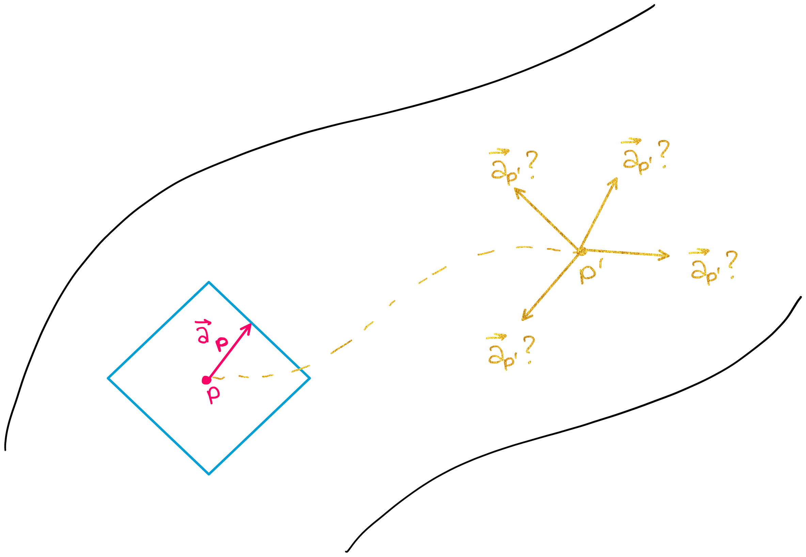
This is why the connection is such an important concept as we analyze data on manifolds. The connection helps us quantify how much a vector will change when we move it from one point to another on a manifold.
More specifically, the connection is able to tell us how one vector will change if it is moved in the direction of another vector. For example, if vectors \(\vec{a}\) and \(\vec{b}\) exist in the same tangent plane, then the connection \(\nabla_{\vec{b}} \vec{a}\) tells us how much the vector \(\vec{a}\) will change if it is moved an infinitesimally small distance in the direction of \(\vec{b}\) (shown in the figure below).
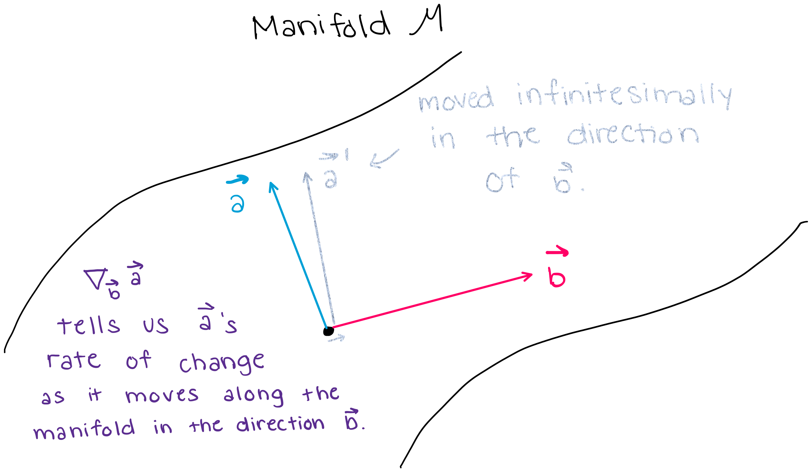
2. Why is the Connection important (big picture)? – parallel transport, parallel vector fields#
The connection defines \(\textit{how much a vector will change when you move it in a certain direction}\), and thus the connection also defines what it means for a vector \(\textbf{not}\) to change when you move it in a certain direction. (If the connection between two vectors: \(\nabla_{\vec{u}} \vec{v}\) is equal to zero, then \(\vec{v}\) does not change as you move it along \(\vec{u}\).) In this section, we will use this aspect of the connection to define \(\textbf{parallel vector fields}\), which will allow us to introduce the notion of \(\textbf{parallel transport}\).
\(\textbf{The Notion of "Parallel" in Euclidean Space-- and why this definition does not work in "manifold space".}\)
In Euclidean space, we say that two vectors, \(\vec{a}\) and \(\vec{b}\) are “parallel” if they are “side by side” and have the same distance continuously between them. However, we cannot use this same notion of “parallel” on a manifold because manifolds are more complicated spaces. In fact, on a manifold, we cannot even define the notion of “distance” without equipping a manifold with something called a “metric” (which we will discuss later in this notebook).
Long story short: on manifolds, the word “parallel” does not hold the same simple definition that it holds in cartesian coordinates. In differential geometry, the notion of “parallel” is defined by \(\textbf{parallel vector fields}\). \(\textbf{Parallel vector fields}\) are then used to define and construct the idea of \(\textbf{parallel transport}\).
2.1 Parallel Vector Fields#
The connection defines \(\textit{how much a vector changes when you move it in a certain direction}\), and thus the connection also defines what it means for a vector \(\textbf{not}\) to change when you move it in a certain direction. This will allow us to introduce the concept of a parallel vector field.
\(\textbf{1. Precise Definition of a Parallel vector field}\)
Let \(M\) be a smooth manifold and \(\nabla\) a connection on \(M\). For any curve \(\gamma : [a,b] \to M\) in \(M\), a vector fied \(X\) is a \(''\textbf{parallel vector field}''\) \(\textit{along a curve}\) \(\gamma(t)\) if
where \(\dot{\gamma}(t)\) is a vector that is tangent to the curve \(\gamma(t)\).
\(\textbf{2. What does this mean?}\)
When we say that \(X\) is “parallel”, you may be asking yourself “parallel to what?” because when we say that a vector is “parallel” in Euclidean space, we mean that the vector is parallel \(\textit{to}\) another vector. However, when we say that a \(\textbf{vector field}\) is \(\textbf{parallel}\) \(\textbf{along a curve}\) on a manifold, the definition of “parallel” is given by the relation above.
Let’s explain the definition above in words instead of math notation. First remember that a vector field \(\textbf{X}\) is comprised of a set of vectors \(\vec{X_p} \in \textbf{T_pM}\) where \(p\) can be any point on the manifold.
Now, consider a vector field \(\textbf{X}\) that lies along a curve \(\gamma(t)\). This means that each one of the vectors in \(\textbf{X}\) stems from a point along \(\gamma(t)\). This vector field is a \(\textbf{parallel vector field}\) if it satisfies:
In other words: if we were to move each point in the vector field \(\textbf{X}\) infinitesimally along the curve \(\gamma\) in the direction of \(\gamma\)’s tangent vector \(\dot{\gamma}\), the vector field \(\textbf{X}\) would not change. Note that this means that in differential geometry, we can only define the term “parallel” when we define it \(\textit{along a curve}\). The figure below shows that at each point \(t\) along the curve \(\gamma\), the vector field satisfies \(\nabla_{\dot{\gamma}(t)} X(t)=0\), which means that the vector field shown in pink is a parallel vector field.

2.2 Parallel Transport#
The parallel transport of a vector \(\vec{v}\) along \(\gamma\) from point \(\gamma(a)\) to point \(\gamma(s)\) is denoted by \(\vec{v'} = \prod_{\gamma,a}^s \vec{v}\). Parallel transport along a curve \(\gamma\) tells us what an initial tangent vector \(\vec{v}\) would look like if it is transported along the curve \(\gamma\) from point \(\gamma(a)\) to point \(\gamma(s)\). Thus, the parallel transport tells us what a vector would look like if it was transported from one tangent space (\(T_{\gamma(a)}M\)) to another tangent space (\(T_{\gamma(s)}M\)).
Conceptually, this is exactly like solving a differential equation: we can find a “solution” (in this case: the transported vector) to the equation \(\nabla_{\dot \gamma(t)} X(\gamma(t)) = 0\) if we are given initial conditions (in this case: an initial point and tangent vector). Note that \(X(\gamma(t))\) in the differential equation simply indicates that the vector field \(X\) is parallel along the curve \(\gamma(t)\). In other words, the parallel transport calculates the parallel vector field along the curve \(\gamma(t)\) and then selects the element of the vector field that lies at the final point \(\gamma(s)\). The figure below shows this process.
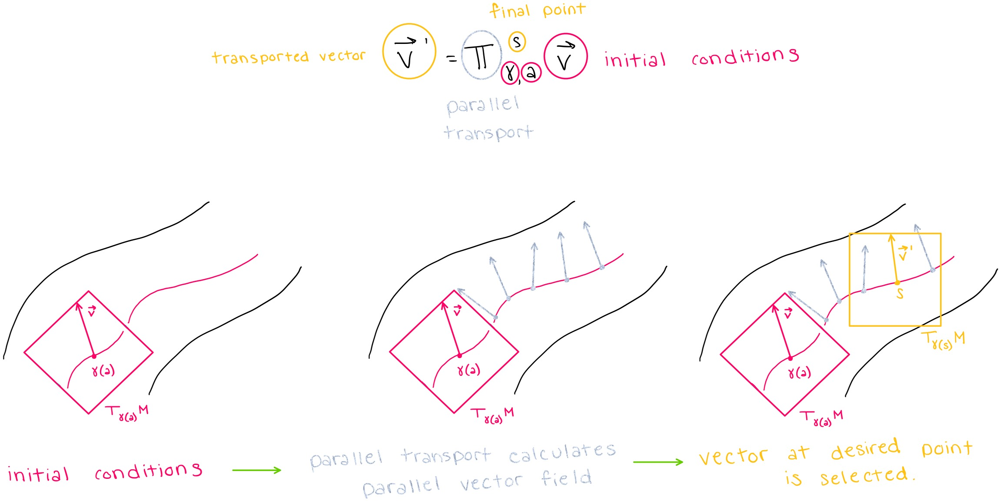
Note that the connection was able to tell us how a vector would change infinitesimally if we move a vector in the direction of another vector, but here, we are able to use parallel transport to calculate how a vector will change if it is translated a \(\textbf{non-infinitesimal}\) distance.
3. Defining Geodesics with the Conneciton#
3.1 Intuitive Definition of a Geodesic#
To gain intuition about what a geodesic is, we can think of a geodesic as the “shortest path” between two points on a geodesic. Note, however, that at this point we cannot quantify ‘’distance’’ because we have not yet introduced Riemannian metrics yet (introduced later in this notebook). Still, we wanted to present this more intuitive definition here for readers who have never heard of a geodesic before.
3.2 Defining a geodesic with the connection#
Each point and tangent vector pair on a manifold has a unique geodesic going through it. We can use the connection and parallel vector fields to provide another definition of a geodesic. A curve is said to be “autoparallel” (and a geodesic) if
is true for all \(t\) along the curve. This means that for each point on a geodesic, moving that point’s tangent vector in the direction of itself will not change the tangent vector.
3.3 Building Intuition with Physics#
It is difficult to comprehend why geodesics are important without examples. Physics, and general relativity in particular, provides many such examples. One of the best examples arises when we consider the paths of objects in spacetime. Spacetime is the \(\textit{four-dimensional}\) “fabric” that makes up the universe, and it is a manifold. Spacetime curves around masses (like planets, stars, black holes), which means that in those areas, we cannot approximate the space as being Euclidean. It is in these spaces that we must use geodesics to predict the paths that objects will follow– because free particles (and light) follow geodesics in space.
In fact, telescopes have confirmed that light bends around very massive objects like black holes (shown below).
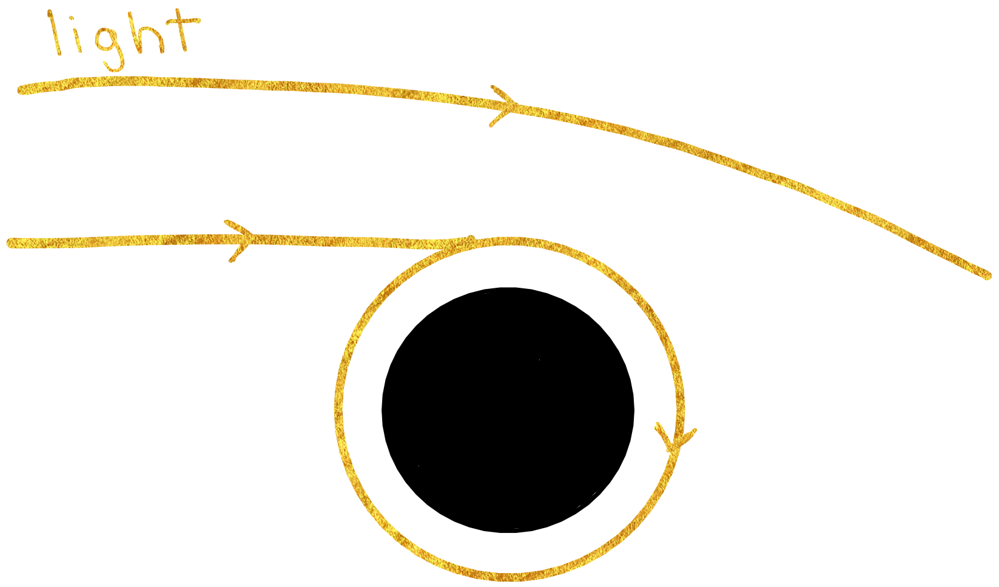
This is just one example of why geodesics are crucial to understanding real-world data. Other examples exist in areas like biophysics where the trajectory of cells along a manifold may follow geodesics.
4. Description of Connection in Local Coordinates (using Christoffel Symbols)#
In \(\textbf{local coordinates}\), the connection can be described mathematically using \(\textbf{Christoffel Symbols}\):
where \(\partial_i,\partial_j\) are basis vectors and elements of \(T_pM\) (the tangent space of some point \(p\) on the manifold), and \(\Gamma\) is called a \(\textbf{Christoffel symbol}\). How ‘’local’’ is ‘’local’’? Local coordinates describe a coordinate system that is limited to an infinitely small area on a manifold. This makes sense because the connection is only defined infinitesimally.
4.1 Math Notation: \(\mathbf{ \partial_i}\) Basis Vector#
\({\partial_i}\) is equivalent to \(\vec{e}_i\). For example, in three dimensions, one could express the basis vectors \(\hat{x}, \hat{y}, \hat{z}\) as either \(\vec{e}_x, \vec{e}_y, \vec{e}_z\) or as \(\partial_x, \partial_y, \partial_z\).
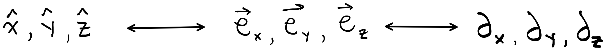
Note/practicality: basis vectors on a manifold may differ at each point, which means that basis vectors are actually dependent on the tangent space \(T_pM\) to which they belong. Thus, we “should” be writing \(\vec{e}_i(p)\), but in practice, the point \(p\) is omitted.
4.2 Einstein Notation#
The \(i\) and \(j\) in each Christoffel symbol can index any one of the basis vectors of a space. For example, in 3D space, \(i\) can be \(x, y,\) or \(z\), and \(j\) can be \(x, y,\) or \(z\). The \(k\) in the Christoffel symbol is different because it is used in a superscript and a subscript. In Einstein notation, when a letter is used in a superscript and a subscript, this is equivalent to a sum over all basis vectors.
For example, if we chose \(i=x\) and \(j=z\), then the connection statement (where the sum over \(k\) is stated explicitly) would read as:
4.3 What does a Christoffel Symbol represent?#
The best way to gain intuition of what a Christoffel symbol represents is through an example.
As discussed in section 1.2, the connection \(\nabla_{\partial_x} \partial_z\) would tell us how the basis vector \(\partial_z\) would change if we moved it along the manifold in the direction of \(\partial_x\). Now, we know that we can represent \(\nabla_{\partial_x} \partial_z\) with Christoffel symbols as:
so the right hand side of the equation should tell us something about the overall rate of change of \(\partial_z\) when we move \(\partial_z\) in the direction of \(\partial_x\). Therefore, it seems natural that each of the Christoffel symbols would represent a rate of change. For example, \(\Gamma_{x z}^{y}\) tells us the rate of change (in the \(\partial_y\) direction) of \(\partial_z\) when we move \(\partial_z\) in the direction of \(\partial_x\).
4.4 The Geodesic Equation in local coordinates#
The geodesic equation can also be expressed in terms of Christoffel symbols in local coordinates:
4.5 Why should we care about Christoffel Symbols and this representation of the connection?#
The ability to represent the connection with Christoffel symbols is \(\textit{essential}\) because Christoffel symbols are something we can actually compute. Up until now, we have presented somewhat abstract formulae with no actual method for computation. Now, with Christoffel symbols, we can compute actual values for the connection. We do not yet have the tools to calculate Christoffel symbols at this point in our tutorial, but we will learn later in the notebook.
5. Additional Important Mathematical concepts utilized by Connection Class: Logarithm, Exponential#
In Euclidean space, addition and subtraction allow us to operate on initial points to generate new points. On manifolds, exponentials and logarithms allow us to operate on points and/or tangent vectors to get new points or tangent vectors.
Exponentials on Manifolds#
In Euclidean space, \(\textit{addition}\) is a tool which takes two points \(p_1, p_2\), “adds” them, and generates a third, larger point \(p_3\) (as shown in the figure below). Addition gives us a way to “move forward” in Euclidean space.
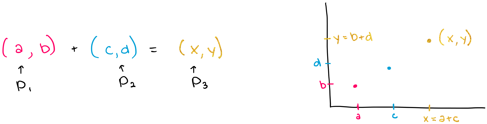
On manifolds, the \(\textit{exponential}\) provides a tool which “takes the exponential of the tangent vector at point \(p\)” to generate a third point on the manifold. The exponential does this by 1) identifying the unique geodesic \(\gamma\) that goes through \(p\) and \(v_p\), 2) identifying the “length” \(l\) of the tangent vector \(v_p\), and 3) calculating another point \(p'\) along \(\gamma(t)\) that is a “distance” \(l\) from the initial point
\(p\) (see figure below). Note again that the notion of “length” and “distance” is different on a manifold than it is in Euclidean space and that quantifying length is not something that we will be able to do without specifying a metric (discussed in RiemannianMetric section).
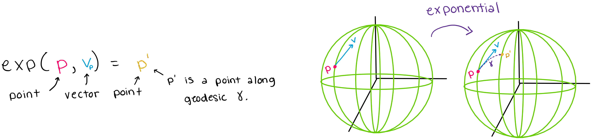
The exponential is often described as being the “differential geometry version” of addition.
Logarithms on Manifolds#
In Euclidean space, \(\textit{subtraction}\) is an operation which allows us to take the third point \(p_3\) and one of the initial points \(p_1\) and extract the other initial point \(p_2\) (as shown in the figure below).
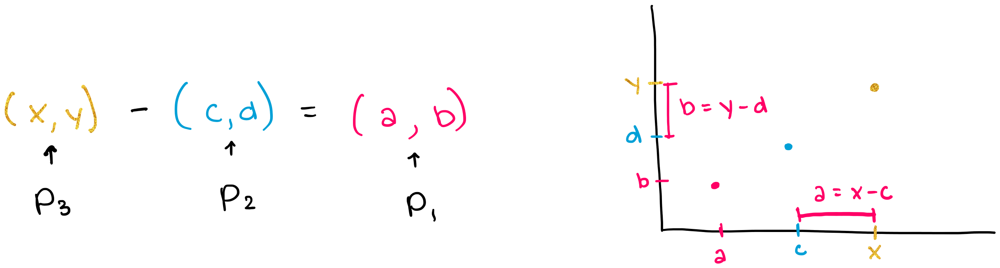
Similarly, the \(\textit{logarithm}\) allows us to take the final point \(p'\) and the initial point \(p\) to extract the tangent vector \(v_p\) at the initial point. The logarithm is able to do this by 1) identifying the unique geodesic \(\gamma\) that connects the two points 2) calculating the “length” of that geodesic 3) generating the unique tangent vector at \(p\), with a “length” equal to that of the geodesic (shown in the figure below). Again, remember that
“length” is not something that we can quantify without specifying a metric, which we will not be able to do until the RiemannianMetric section.
A key point here is that if you know a point and a tangent vector at that point, you can calculate a unique geodesic that goes through that point, and similarly, if you know the point and geodesic, you should be able to extract the unique tangent vector that produced that geodesic.
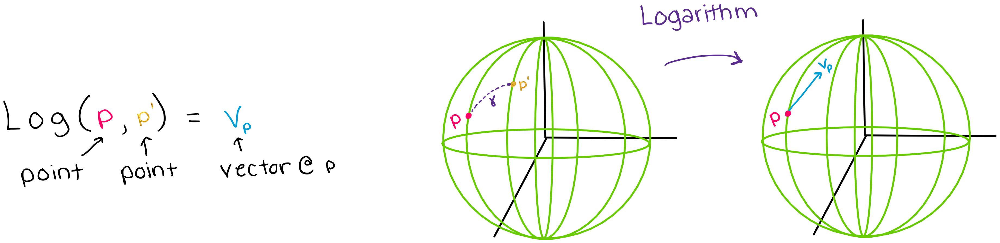
The logarithm is the inverse map of the exponential and is often described as being the “differential geometry version” of subtraction.
6. Geomstats Documentation: The Connection Class#
The Connection class in geomstats has four methods and one subclass, whose structure is shown below:
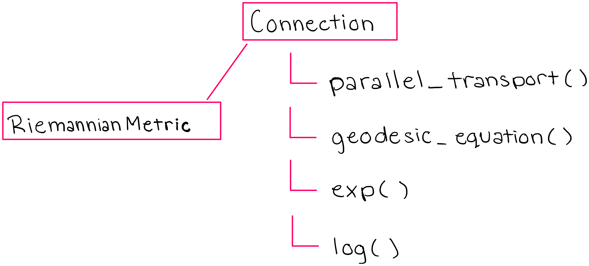
The methods of the Connection class also equip the RiemannianMetric subclass with the tools it needs to perform calculations on manifolds (we will discuss the RiemannianMetric class later in this notebook).
We will first print the key methods of the Connection class, and then at the end we will print the entire connection class for anyone who is interested.
In [1]:
import os
import sys
import warnings
sys.path.append(os.path.dirname(os.getcwd()))
warnings.filterwarnings("ignore")
import geomstats.backend as gs
gs.random.seed(2020)
INFO: Using numpy backend
6.1 method: parallel_transport()#
This is the method in the Connection class which calculates the parallel transport of a given tangent vector, in the direction of another tangent vector. Run the following code to see the parallel_transport method in Geomstats:
In [6]:
import inspect
from geomstats.geometry.connection import Connection
for line in inspect.getsourcelines(Connection.parallel_transport)[0]:
line = line.replace('\n','')
print(line)
def parallel_transport(
self, tangent_vec, base_point, direction=None, end_point=None
):
r"""Compute the parallel transport of a tangent vector.
Closed-form solution for the parallel transport of a tangent vector
along the geodesic between two points `base_point` and `end_point`
or alternatively defined by :math:`t\mapsto exp_(base_point)(
t*direction)`.
Parameters
----------
tangent_vec : array-like, shape=[..., {dim, [n, m]}]
Tangent vector at base point to be transported.
base_point : array-like, shape=[..., {dim, [n, m]}]
Point on the manifold. Point to transport from.
direction : array-like, shape=[..., {dim, [n, m]}]
Tangent vector at base point, along which the parallel transport
is computed.
Optional, default: None.
end_point : array-like, shape=[..., {dim, [n, m]}]
Point on the manifold. Point to transport to.
Optional, default: None.
Returns
-------
transported_tangent_vec: array-like, shape=[..., {dim, [n, m]}]
Transported tangent vector at `exp_(base_point)(tangent_vec_b)`.
"""
raise NotImplementedError(
"The closed-form solution of parallel transport is not known, "
"use the ladder_parallel_transport instead."
)
6.2 method: geodesic_equation()#
This is the method in the Connection class which calculates the geodesic that a given tangent vector will follow on the manifold. In this code, note the use of the christoffel symbols that allows us to give the expression of the geodesic equation in local coordinates. Also note the use of the function “einsum” which refers to the Einstein summation that we described above. Run the code below to see the geodesic_equation method in Geomstats.
In [4]:
import inspect
from geomstats.geometry.connection import Connection
for line in inspect.getsourcelines(Connection.geodesic_equation)[0]:
line = line.replace('\n','')
print(line)
def geodesic_equation(self, state, _time):
"""Compute the geodesic ODE associated with the connection.
Parameters
----------
state : array-like, shape=[..., dim]
Tangent vector at the position.
_time : array-like, shape=[..., dim]
Point on the manifold, the position at which to compute the
geodesic ODE.
Returns
-------
geodesic_ode : array-like, shape=[..., dim]
Value of the vector field to be integrated at position.
"""
position, velocity = state
gamma = self.christoffels(position)
equation = gs.einsum("...kij,...i->...kj", gamma, velocity)
equation = -gs.einsum("...kj,...j->...k", equation, velocity)
return gs.stack([velocity, equation])
6.3 method: exp() (exponential)#
This is the method in the Connection class which computes the exponential of a point and a vector on a manifold. Run the following code to see the exp method in Geomstats:
In [2]:
import inspect
from geomstats.geometry.connection import Connection
for line in inspect.getsourcelines(Connection.exp)[0]:
line = line.replace('\n','')
print(line)
def exp(
self,
tangent_vec,
base_point,
n_steps=N_STEPS,
step="euler",
point_type=None,
**kwargs
):
"""Exponential map associated to the affine connection.
Exponential map at base_point of tangent_vec computed by integration
of the geodesic equation (initial value problem), using the
christoffel symbols.
Parameters
----------
tangent_vec : array-like, shape=[..., dim]
Tangent vector at the base point.
base_point : array-like, shape=[..., dim]
Point on the manifold.
n_steps : int
Number of discrete time steps to take in the integration.
Optional, default: N_STEPS.
step : str, {'euler', 'rk4'}
The numerical scheme to use for integration.
Optional, default: 'euler'.
point_type : str, {'vector', 'matrix'}
Type of representation used for points.
Optional, default: None.
Returns
-------
exp : array-like, shape=[..., dim]
Point on the manifold.
"""
base_point = gs.broadcast_to(base_point, tangent_vec.shape)
initial_state = gs.stack([base_point, tangent_vec])
flow = integrate(
self.geodesic_equation, initial_state, n_steps=n_steps, step=step
)
exp = flow[-1][0]
return exp
6.4 method: log() (logarithm)#
This is the method in the Connection class which computes the logarithm of two points on a manifold. Run the following code to see the log method in Geomstats:
In [7]:
import inspect
from geomstats.geometry.connection import Connection
for line in inspect.getsourcelines(Connection.log)[0]:
line = line.replace('\n','')
print(line)
def log(
self,
point,
base_point,
n_steps=N_STEPS,
step="euler",
max_iter=25,
verbose=False,
tol=gs.atol,
):
"""Compute logarithm map associated to the affine connection.
Solve the boundary value problem associated to the geodesic equation
using the Christoffel symbols and conjugate gradient descent.
Parameters
----------
point : array-like, shape=[..., dim]
Point on the manifold.
base_point : array-like, shape=[..., dim]
Point on the manifold.
n_steps : int
Number of discrete time steps to take in the integration.
Optional, default: N_STEPS.
step : str, {'euler', 'rk4'}
Numerical scheme to use for integration.
Optional, default: 'euler'.
max_iter
verbose
tol
Returns
-------
tangent_vec : array-like, shape=[..., dim]
Tangent vector at the base point.
"""
max_shape = point.shape
if len(point.shape) <= len(base_point.shape):
max_shape = base_point.shape
def objective(velocity):
"""Define the objective function."""
velocity = gs.array(velocity)
velocity = gs.cast(velocity, dtype=base_point.dtype)
velocity = gs.reshape(velocity, max_shape)
delta = self.exp(velocity, base_point, n_steps, step) - point
return gs.sum(delta**2)
objective_with_grad = gs.autodiff.value_and_grad(objective, to_numpy=True)
tangent_vec = gs.flatten(gs.random.rand(*max_shape))
res = minimize(
objective_with_grad,
tangent_vec,
method="L-BFGS-B",
jac=True,
options={"disp": verbose, "maxiter": max_iter},
tol=tol,
)
tangent_vec = gs.array(res.x)
tangent_vec = gs.reshape(tangent_vec, max_shape)
tangent_vec = gs.cast(tangent_vec, dtype=base_point.dtype)
return tangent_vec
6.5 The full Connection class#
Run the code below to see the entire code for the Connection class:
In [4]:
import inspect
from geomstats.geometry.connection import Connection
for line in inspect.getsourcelines(Connection)[0]:
line = line.replace('\n','')
print(line)
class Connection(ABC):
r"""Class for affine connections.
Parameters
----------
dim : int
Dimension of the underlying manifold.
shape : tuple of int
Shape of one element of the manifold.
Optional, default : (dim, ).
default_point_type : str, {\'vector\', \'matrix\'}
Point type.
Optional, default: \'vector\'.
default_coords_type : str, {\'intrinsic\', \'extrinsic\', etc}
Coordinate type.
Optional, default: \'intrinsic\'.
"""
def __init__(
self, dim, shape=None, default_point_type=None, default_coords_type="intrinsic"
):
if shape is None:
shape = (dim,)
if default_point_type is None:
default_point_type = POINT_TYPES[len(shape)]
geomstats.errors.check_integer(dim, "dim")
geomstats.errors.check_parameter_accepted_values(
default_point_type, "default_point_type", ["vector", "matrix"]
)
self.dim = dim
self.shape = shape
self.default_point_type = default_point_type
self.default_coords_type = default_coords_type
def christoffels(self, base_point):
"""Christoffel symbols associated with the connection.
Parameters
----------
base_point : array-like, shape=[..., dim]
Point on the manifold.
Returns
-------
gamma : array-like, shape=[..., dim, dim, dim]
Christoffel symbols, with the contravariant index on
the first dimension.
"""
raise NotImplementedError("The Christoffel symbols are not implemented.")
def geodesic_equation(self, state, _time):
"""Compute the geodesic ODE associated with the connection.
Parameters
----------
state : array-like, shape=[..., dim]
Tangent vector at the position.
_time : array-like, shape=[..., dim]
Point on the manifold, the position at which to compute the
geodesic ODE.
Returns
-------
geodesic_ode : array-like, shape=[..., dim]
Value of the vector field to be integrated at position.
"""
position, velocity = state
gamma = self.christoffels(position)
equation = gs.einsum("...kij,...i->...kj", gamma, velocity)
equation = -gs.einsum("...kj,...j->...k", equation, velocity)
return gs.stack([velocity, equation])
def exp(
self,
tangent_vec,
base_point,
n_steps=N_STEPS,
step="euler",
point_type=None,
**kwargs
):
"""Exponential map associated to the affine connection.
Exponential map at base_point of tangent_vec computed by integration
of the geodesic equation (initial value problem), using the
christoffel symbols.
Parameters
----------
tangent_vec : array-like, shape=[..., dim]
Tangent vector at the base point.
base_point : array-like, shape=[..., dim]
Point on the manifold.
n_steps : int
Number of discrete time steps to take in the integration.
Optional, default: N_STEPS.
step : str, {'euler', 'rk4'}
The numerical scheme to use for integration.
Optional, default: 'euler'.
point_type : str, {'vector', 'matrix'}
Type of representation used for points.
Optional, default: None.
Returns
-------
exp : array-like, shape=[..., dim]
Point on the manifold.
"""
initial_state = gs.stack([base_point, tangent_vec])
flow = integrate(
self.geodesic_equation, initial_state, n_steps=n_steps, step=step
)
exp = flow[-1][0]
return exp
def log(
self,
point,
base_point,
n_steps=N_STEPS,
step="euler",
max_iter=25,
verbose=False,
tol=gs.atol,
):
"""Compute logarithm map associated to the affine connection.
Solve the boundary value problem associated to the geodesic equation
using the Christoffel symbols and conjugate gradient descent.
Parameters
----------
point : array-like, shape=[..., dim]
Point on the manifold.
base_point : array-like, shape=[..., dim]
Point on the manifold.
n_steps : int
Number of discrete time steps to take in the integration.
Optional, default: N_STEPS.
step : str, {'euler', 'rk4'}
Numerical scheme to use for integration.
Optional, default: 'euler'.
max_iter
verbose
tol
Returns
-------
tangent_vec : array-like, shape=[..., dim]
Tangent vector at the base point.
"""
max_shape = point.shape
if len(point.shape) <= len(base_point.shape):
max_shape = base_point.shape
def objective(velocity):
"""Define the objective function."""
velocity = gs.array(velocity)
velocity = gs.cast(velocity, dtype=base_point.dtype)
velocity = gs.reshape(velocity, max_shape)
delta = self.exp(velocity, base_point, n_steps, step) - point
return gs.sum(delta**2)
objective_with_grad = gs.autodiff.value_and_grad(objective, to_numpy=True)
tangent_vec = gs.flatten(gs.random.rand(*max_shape))
res = minimize(
objective_with_grad,
tangent_vec,
method="L-BFGS-B",
jac=True,
options={"disp": verbose, "maxiter": max_iter},
tol=tol,
)
tangent_vec = gs.array(res.x)
tangent_vec = gs.reshape(tangent_vec, max_shape)
tangent_vec = gs.cast(tangent_vec, dtype=base_point.dtype)
return tangent_vec
def _pole_ladder_step(
self, base_point, next_point, base_shoot, return_geodesics=False, **kwargs
):
"""Compute one Pole Ladder step.
One step of pole ladder scheme [LP2013a]_ using the geodesic to
transport along as main_geodesic of the parallelogram.
Parameters
----------
base_point : array-like, shape=[..., dim]
Point on the manifold, from which to transport.
next_point : array-like, shape=[..., dim]
Point on the manifold, to transport to.
base_shoot : array-like, shape=[..., dim]
Point on the manifold, end point of the geodesics starting
from the base point with initial speed to be transported.
return_geodesics : bool, optional (defaults to False)
Whether to return the geodesics of the
construction.
Returns
-------
next_step : dict of array-like and callable with following keys:
next_tangent_vec : array-like, shape=[..., dim]
Tangent vector at end point.
end_point : array-like, shape=[..., dim]
Point on the manifold, closes the geodesic parallelogram of the
construction.
geodesics : list of callable, len=3 (only if
`return_geodesics=True`)
Three geodesics of the construction.
References
----------
.. [LP2013a] Marco Lorenzi, Xavier Pennec. Efficient Parallel Transport
of Deformations in Time Series of Images: from Schild's to
Pole Ladder. Journal of Mathematical Imaging and Vision, Springer
Verlag, 2013,50 (1-2), pp.5-17. ⟨10.1007/s10851-013-0470-3⟩
"""
mid_tangent_vector_to_shoot = (
1.0 / 2.0 * self.log(base_point=base_point, point=next_point, **kwargs)
)
mid_point = self.exp(
base_point=base_point, tangent_vec=mid_tangent_vector_to_shoot, **kwargs
)
tangent_vector_to_shoot = -self.log(
base_point=mid_point, point=base_shoot, **kwargs
)
end_shoot = self.exp(
base_point=mid_point, tangent_vec=tangent_vector_to_shoot, **kwargs
)
geodesics = []
if return_geodesics:
main_geodesic = self.geodesic(
initial_point=base_point, end_point=next_point
)
diagonal = self.geodesic(initial_point=mid_point, end_point=base_shoot)
final_geodesic = self.geodesic(
initial_point=next_point, end_point=end_shoot
)
geodesics = [main_geodesic, diagonal, final_geodesic]
return {"geodesics": geodesics, "end_point": end_shoot}
def _schild_ladder_step(
self, base_point, next_point, base_shoot, return_geodesics=False, **kwargs
):
"""Compute one Schild's Ladder step.
One step of the Schild's ladder scheme [LP2013a]_ using the geodesic to
transport along as one side of the parallelogram.
Parameters
----------
base_point : array-like, shape=[..., dim]
Point on the manifold, from which to transport.
next_point : array-like, shape=[..., dim]
Point on the manifold, to transport to.
base_shoot : array-like, shape=[..., dim]
Point on the manifold, end point of the geodesics starting
from the base point with initial speed to be transported.
return_geodesics : bool
Whether to return points computed along each geodesic of the
construction.
Optional, default: False.
Returns
-------
transported_tangent_vector : array-like, shape=[..., dim]
Tangent vector at end point.
end_point : array-like, shape=[..., dim]
Point on the manifold, closes the geodesic parallelogram of the
construction.
References
----------
.. [LP2013a] Marco Lorenzi, Xavier Pennec. Efficient Parallel Transport
of Deformations in Time Series of Images: from Schild's to
Pole Ladder. Journal of Mathematical Imaging and Vision, Springer
Verlag, 2013,50 (1-2), pp.5-17. ⟨10.1007/s10851-013-0470-3⟩
"""
mid_tangent_vector_to_shoot = (
1.0 / 2.0 * self.log(base_point=base_shoot, point=next_point, **kwargs)
)
mid_point = self.exp(
base_point=base_shoot, tangent_vec=mid_tangent_vector_to_shoot, **kwargs
)
tangent_vector_to_shoot = -self.log(
base_point=mid_point, point=base_point, **kwargs
)
end_shoot = self.exp(
base_point=mid_point, tangent_vec=tangent_vector_to_shoot, **kwargs
)
geodesics = []
if return_geodesics:
main_geodesic = self.geodesic(
initial_point=base_point, end_point=next_point
)
diagonal = self.geodesic(initial_point=base_point, end_point=end_shoot)
second_diagonal = self.geodesic(
initial_point=base_shoot, end_point=next_point
)
final_geodesic = self.geodesic(
initial_point=next_point, end_point=end_shoot
)
geodesics = [main_geodesic, diagonal, second_diagonal, final_geodesic]
return {"geodesics": geodesics, "end_point": end_shoot}
def ladder_parallel_transport(
self,
tangent_vec,
base_point,
direction,
n_rungs=1,
scheme="pole",
alpha=1,
**single_step_kwargs
):
"""Approximate parallel transport using the pole ladder scheme.
Approximate Parallel transport using either the pole ladder or the
Schild's ladder scheme [LP2013b]_. Pole ladder is exact in symmetric
spaces and of order two in general while Schild's ladder is a first
order approximation [GP2020]_. Both schemes are available on any affine
connection manifolds whose exponential and logarithm maps are
implemented. `tangent_vec` is transported along the geodesic starting
at the base_point with initial tangent vector `direction`.
Parameters
----------
tangent_vec : array-like, shape=[..., dim]
Tangent vector at base point to transport.
direction : array-like, shape=[..., dim]
Tangent vector at base point, initial speed of the geodesic along
which to transport.
base_point : array-like, shape=[..., dim]
Point on the manifold, initial position of the geodesic along
which to transport.
n_rungs : int
Number of steps of the ladder.
Optional, default: 1.
scheme : str, {'pole', 'schild'}
The scheme to use for the construction of the ladder at each step.
Optional, default: 'pole'.
alpha : float
Exponent for the scaling of the vector to transport. Must be
greater or equal to 1, 2 is optimal. See [GP2020]_.
Optional, default: 2
**single_step_kwargs : keyword arguments for the step functions
Returns
-------
ladder : dict of array-like and callable with following keys
transported_tangent_vector : array-like, shape=[..., dim]
Approximation of the parallel transport of tangent vector a.
trajectory : list of list of callable, len=n_steps
List of lists containing the geodesics of the
construction, only if `return_geodesics=True` in the step
function. The geodesics are methods of the class connection.
References
----------
.. [LP2013b] Lorenzi, Marco, and Xavier Pennec. “Efficient Parallel
Transport of Deformations in Time Series of Images: From Schild to
Pole Ladder.” Journal of Mathematical Imaging and Vision 50, no. 1
(September 1, 2014): 5–17. https://doi.org/10.1007/s10851-013-0470-3.
.. [GP2020] Guigui, Nicolas, and Xavier Pennec. “Numerical Accuracy
of Ladder Schemes for Parallel Transport on Manifolds.”
Foundations of Computational Mathematics, June 18, 2021.
https://doi.org/10.1007/s10208-021-09515-x.
"""
geomstats.errors.check_integer(n_rungs, "n_rungs")
if alpha < 1:
raise ValueError("alpha must be greater or equal to one")
current_point = base_point
next_tangent_vec = tangent_vec / (n_rungs**alpha)
methods = {"pole": self._pole_ladder_step, "schild": self._schild_ladder_step}
single_step = methods[scheme]
base_shoot = self.exp(base_point=current_point, tangent_vec=next_tangent_vec)
trajectory = []
for i_point in range(n_rungs):
frac_tan_vector_b = (i_point + 1) / n_rungs * direction
next_point = self.exp(base_point=base_point, tangent_vec=frac_tan_vector_b)
next_step = single_step(
base_point=current_point,
next_point=next_point,
base_shoot=base_shoot,
**single_step_kwargs
)
current_point = next_point
base_shoot = next_step["end_point"]
trajectory.append(next_step["geodesics"])
transported_tangent_vec = self.log(base_shoot, current_point)
if n_rungs % 2 == 1 and scheme == "pole":
transported_tangent_vec *= -1.0
transported_tangent_vec *= n_rungs**alpha
return {
"transported_tangent_vec": transported_tangent_vec,
"end_point": current_point,
"trajectory": trajectory,
}
def curvature(self, tangent_vec_a, tangent_vec_b, tangent_vec_c, base_point):
r"""Compute the curvature.
For three vectors fields :math:`X|_P = tangent_vec_a,
Y|_P = tangent_vec_b, Z|_P = tangent_vec_c` with tangent vector
specified in argument at the base point :math:`P`,
the curvature is defined by :math:`R(X,Y)Z = \nabla_{[X,Y]}Z
- \nabla_X\nabla_Y Z + \nabla_Y\nabla_X Z`.
Parameters
----------
tangent_vec_a : array-like, shape=[..., {dim, [n, m]}]
Tangent vector at `base_point`.
tangent_vec_b : array-like, shape=[..., {dim, [n, m]}]
Tangent vector at `base_point`.
tangent_vec_c : array-like, shape=[..., {dim, [n, m]}]
Tangent vector at `base_point`.
base_point : array-like, shape=[..., {dim, [n, m]}]
Point on the group. Optional, default is the identity.
Returns
-------
curvature : array-like, shape=[..., {dim, [n, m]}]
Tangent vector at `base_point`.
"""
raise NotImplementedError("The curvature is not implemented.")
def directional_curvature(self, tangent_vec_a, tangent_vec_b, base_point):
"""Compute the directional curvature (tidal force operator).
For two vectors fields :math:`X|_P = tangent_vec_a`, and :math:
`Y|_P = tangent_vec_b` with tangent vector specified in argument at
the base point :math:`P`, the directional curvature, better known
in relativity as the tidal force operator, is defined by
:math:`R_Y(X) = R(Y,X)Y`.
Parameters
----------
tangent_vec_a : array-like, shape=[..., dim]
Tangent vector at `base_point`.
tangent_vec_b : array-like, shape=[..., dim]
Tangent vector at `base_point`.
base_point : array-like, shape=[..., dim]
Base-point on the manifold.
Returns
-------
directional_curvature : array-like, shape=[..., dim]
Tangent vector at `base_point`.
"""
return self.curvature(tangent_vec_b, tangent_vec_a, tangent_vec_b, base_point)
def curvature_derivative(
self,
tangent_vec_a,
tangent_vec_b,
tangent_vec_c,
tangent_vec_d,
base_point=None,
):
r"""Compute the covariant derivative of the curvature.
For four vectors fields :math:`H|_P = tangent_vec_a, X|_P =
tangent_vec_b, Y|_P = tangent_vec_c, Z|_P = tangent_vec_d` with
tangent vector value specified in argument at the base point `P`,
the covariant derivative of the curvature
:math:`(\nabla_H R)(X, Y) Z |_P` is computed at the base point P.
Parameters
----------
tangent_vec_a : array-like, shape=[..., {dim, [n, m]}]
Tangent vector at `base_point`.
tangent_vec_b : array-like, shape=[..., {dim, [n, m]}]
Tangent vector at `base_point`.
tangent_vec_c : array-like, shape=[..., {dim, [n, m]}]
Tangent vector at `base_point`.
tangent_vec_d : array-like, shape=[..., {dim, [n, m]}]
Tangent vector at `base_point`.
base_point : array-like, shape=[..., {dim, [n, m]}]
Point on the group. Optional, default is the identity.
Returns
-------
curvature_derivative : array-like, shape=[..., dim]
Tangent vector at base-point.
"""
raise NotImplementedError("The curvature is not implemented.")
def directional_curvature_derivative(
self, tangent_vec_a, tangent_vec_b, base_point=None
):
r"""Compute the covariant derivative of the directional curvature.
For two vectors fields :math:`X|_P = tangent_vec_a, Y|_P =
tangent_vec_b` with tangent vector value specified in argument at the
base point `P`, the covariant derivative (in the direction 'X')
:math:`(\nabla_X R_Y)(X) |_P = (\nabla_X R)(Y, X) Y |_P` of the
directional curvature (in the direction `Y`)
:math:`R_Y(X) = R(Y, X) Y` is a quadratic tensor in 'X' and 'Y' that
plays an important role in the computation of the moments of the
empirical Fréchet mean.
References
----------
.. [Pennec] Pennec, xavier. Curvature effects on the empirical mean in
Riemannian and affine Manifolds: a non-asymptotic high concentration
expansion in the small-sample regime. Preprint. June 2019.
https://arxiv.org/abs/1906.07418
"""
return self.curvature_derivative(
tangent_vec_a, tangent_vec_b, tangent_vec_a, tangent_vec_b, base_point
)
def geodesic(self, initial_point, end_point=None, initial_tangent_vec=None):
"""Generate parameterized function for the geodesic curve.
Geodesic curve defined by either:
- an initial point and an initial tangent vector,
- an initial point and an end point.
Parameters
----------
initial_point : array-like, shape=[..., dim]
Point on the manifold, initial point of the geodesic.
end_point : array-like, shape=[..., dim], optional
Point on the manifold, end point of the geodesic. If None,
an initial tangent vector must be given.
initial_tangent_vec : array-like, shape=[..., dim],
Tangent vector at base point, the initial speed of the geodesics.
Optional, default: None.
If None, an end point must be given and a logarithm is computed.
Returns
-------
path : callable
Time parameterized geodesic curve. If a batch of initial
conditions is passed, the output array's first dimension
represents the different initial conditions, and the second
corresponds to time.
"""
point_type = self.default_point_type
if end_point is None and initial_tangent_vec is None:
raise ValueError(
"Specify an end point or an initial tangent "
"vector to define the geodesic."
)
if end_point is not None:
shooting_tangent_vec = self.log(point=end_point, base_point=initial_point)
if initial_tangent_vec is not None:
if not gs.allclose(shooting_tangent_vec, initial_tangent_vec):
raise RuntimeError(
"The shooting tangent vector is too"
" far from the input initial tangent vector."
)
initial_tangent_vec = shooting_tangent_vec
if point_type == "vector":
initial_point = gs.to_ndarray(initial_point, to_ndim=2)
initial_tangent_vec = gs.to_ndarray(initial_tangent_vec, to_ndim=2)
else:
initial_point = gs.to_ndarray(initial_point, to_ndim=3)
initial_tangent_vec = gs.to_ndarray(initial_tangent_vec, to_ndim=3)
n_initial_conditions = initial_tangent_vec.shape[0]
if n_initial_conditions > 1 and len(initial_point) == 1:
initial_point = gs.stack([initial_point[0]] * n_initial_conditions)
def path(t):
"""Generate parameterized function for geodesic curve.
Parameters
----------
t : array-like, shape=[n_points,]
Times at which to compute points of the geodesics.
"""
t = gs.array(t)
t = gs.cast(t, initial_tangent_vec.dtype)
t = gs.to_ndarray(t, to_ndim=1)
if point_type == "vector":
tangent_vecs = gs.einsum("i,...k->...ik", t, initial_tangent_vec)
else:
tangent_vecs = gs.einsum("i,...kl->...ikl", t, initial_tangent_vec)
points_at_time_t = [
self.exp(tv, pt) for tv, pt in zip(tangent_vecs, initial_point)
]
points_at_time_t = gs.stack(points_at_time_t, axis=0)
return (
points_at_time_t[0] if n_initial_conditions == 1 else points_at_time_t
)
return path
def parallel_transport(
self, tangent_vec, base_point, direction=None, end_point=None
):
r"""Compute the parallel transport of a tangent vector.
Closed-form solution for the parallel transport of a tangent vector
along the geodesic between two points `base_point` and `end_point`
or alternatively defined by :math:`t\mapsto exp_(base_point)(
t*direction)`.
Parameters
----------
tangent_vec : array-like, shape=[..., {dim, [n, m]}]
Tangent vector at base point to be transported.
base_point : array-like, shape=[..., {dim, [n, m]}]
Point on the manifold. Point to transport from.
direction : array-like, shape=[..., {dim, [n, m]}]
Tangent vector at base point, along which the parallel transport
is computed.
Optional, default: None.
end_point : array-like, shape=[..., {dim, [n, m]}]
Point on the manifold. Point to transport to.
Optional, default: None.
Returns
-------
transported_tangent_vec: array-like, shape=[..., {dim, [n, m]}]
Transported tangent vector at `exp_(base_point)(tangent_vec_b)`.
"""
raise NotImplementedError(
"The closed-form solution of parallel transport is not known, "
"use the ladder_parallel_transport instead."
)
7. RiemannianMetric Sub-Class#
The RiemannianMetric class is the only subclass of the Connection class. Its function in Geomstats is so important that we will dedicate a whole additional section of this notebook to it.
7.1 Riemannian Metrics#
When we considered “connections” on manifolds, we had to erase what we thought we knew about transporting vectors. We had to accept the fact that transporting a vector is much more complicated on a manifold because the basis vectors are not identical at each point on a manifold, which leads to much more complicated calculations. Additionally, we had to generalize what we knew about transporting vectors on a Euclidean space.
Similarly, here we will erase our previous notions of “measurement” (distance, angles, curvature, etc.) because the concept of such measurements is quite different on manifolds than in Euclidean space. In fact, there is no way to define notions of such measurements on a manifold until you equip the manifold with a something called a ‘’metric’’.
A \(\textbf{Riemannian Metric}\) \(g\) on a manifold \(M\) is a family of inner products \((\langle.,.\rangle_p)_{p\in M}\) on each tangent space \(T_pM\) such that \(\langle.,.\rangle_p\) depends smoothly on \(p\). If this does not make sense, then just understand that a Riemannian Metric allows us to describe the space of a manifold using “inner products”, which allows us to define distance functions and other measurement functions on manifolds.
7.2 How is the Riemannian Metric Connected with the Connection?#
\(\textbf{1. First, each Riemannian Metric generates a unique Levi-Civita connection.}\) A Levi-Civita connection is a special type of connection that is “torsion-free” and “compatible”. For now, do not worry about what “torsion-free” and “compatible” mean. Just know that when we work with connections in Geomstats, we are working with Levi-Civita connections.
\(\textbf{2. Second, the Riemannian Metric ''g'' allows us to calculate Christoffel symbols.}\) Recall from earlier in this notebook that we can calculate the connection in local coordinates by using christoffel symbols (\(\Gamma_{i j}^{k}\)). However, we can only calculate these Christoffel symbols if we have equip the manifold with a metric. In the case of a Levi-Civita connection, the Christoffel symbols can be calculated from the metric as follows:
7.3 RiemannianMetric in Geomstats#
The RiemannianMetric subclass is the class that actually performs calculations on manifolds. This is because we cannot perform “general” calculations like logarithm, exponential, parallel transport, and calculating geodesics without first being equip with a metric. The RiemannianMetric subclass contains a collection of metrics that Geomstats users may use to perform calculations on manifolds. The structure of the RiemannianMetric class is shown below.
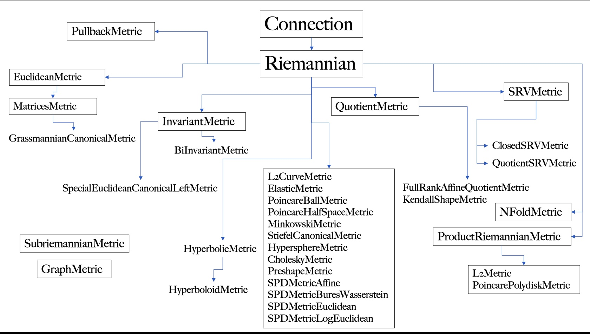
In [8]:
from geomstats.geometry.riemannian_metric import RiemannianMetric
for line in inspect.getsourcelines(RiemannianMetric)[0]:
line = line.replace('\n','')
print(line)
class RiemannianMetric(Connection, ABC):
"""Class for Riemannian and pseudo-Riemannian metrics.
The associated Levi-Civita connection on the tangent bundle.
Parameters
----------
dim : int
Dimension of the manifold.
shape : tuple of int
Shape of one element of the manifold.
Optional, default : (dim, ).
signature : tuple
Signature of the metric.
Optional, default: None.
default_point_type : str, {'vector', 'matrix'}
Point type.
Optional, default: 'vector'.
"""
def __init__(self, dim, shape=None, signature=None, default_point_type=None):
super(RiemannianMetric, self).__init__(
dim=dim, shape=shape, default_point_type=default_point_type
)
if signature is None:
signature = (dim, 0)
self.signature = signature
def metric_matrix(self, base_point=None):
"""Metric matrix at the tangent space at a base point.
Parameters
----------
base_point : array-like, shape=[..., dim]
Base point.
Optional, default: None.
Returns
-------
mat : array-like, shape=[..., dim, dim]
Inner-product matrix.
"""
raise NotImplementedError(
"The computation of the metric matrix" " is not implemented."
)
def cometric_matrix(self, base_point=None):
"""Inner co-product matrix at the cotangent space at a base point.
This represents the cometric matrix, i.e. the inverse of the
metric matrix.
Parameters
----------
base_point : array-like, shape=[..., dim]
Base point.
Optional, default: None.
Returns
-------
mat : array-like, shape=[..., dim, dim]
Inverse of inner-product matrix.
"""
metric_matrix = self.metric_matrix(base_point)
cometric_matrix = gs.linalg.inv(metric_matrix)
return cometric_matrix
def inner_product_derivative_matrix(self, base_point=None):
"""Compute derivative of the inner prod matrix at base point.
Parameters
----------
base_point : array-like, shape=[..., dim]
Base point.
Optional, default: None.
Returns
-------
mat : array-like, shape=[..., dim, dim]
Derivative of inverse of inner-product matrix.
"""
metric_derivative = gs.autodiff.jacobian(self.metric_matrix)
return metric_derivative(base_point)
def christoffels(self, base_point):
r"""Compute Christoffel symbols of the Levi-Civita connection.
The Koszul formula defining the Levi-Civita connection gives the
expression of the Christoffel symbols with respect to the metric:
:math:`\Gamma^k_{ij}(p) = \frac{1}{2} g^{lk}(
\partial_i g_{jl} + \partial_j g_{li} - \partial_l g_{ij})`,
where:
- :math:`p` represents the base point, and
- :math:`g` represents the Riemannian metric tensor.
Parameters
----------
base_point: array-like, shape=[..., dim]
Base point.
Returns
-------
christoffels: array-like, shape=[..., dim, dim, dim]
Christoffel symbols.
"""
cometric_mat_at_point = self.cometric_matrix(base_point)
metric_derivative_at_point = self.inner_product_derivative_matrix(base_point)
term_1 = gs.einsum(
"...lk,...jli->...kij", cometric_mat_at_point, metric_derivative_at_point
)
term_2 = gs.einsum(
"...lk,...lij->...kij", cometric_mat_at_point, metric_derivative_at_point
)
term_3 = -gs.einsum(
"...lk,...ijl->...kij", cometric_mat_at_point, metric_derivative_at_point
)
christoffels = 0.5 * (term_1 + term_2 + term_3)
return christoffels
def inner_product(self, tangent_vec_a, tangent_vec_b, base_point):
"""Inner product between two tangent vectors at a base point.
Parameters
----------
tangent_vec_a: array-like, shape=[..., dim]
Tangent vector at base point.
tangent_vec_b: array-like, shape=[..., dim]
Tangent vector at base point.
base_point: array-like, shape=[..., dim]
Base point.
Optional, default: None.
Returns
-------
inner_product : array-like, shape=[...,]
Inner-product.
"""
inner_prod_mat = self.metric_matrix(base_point)
aux = gs.einsum("...j,...jk->...k", tangent_vec_a, inner_prod_mat)
inner_prod = gs.einsum("...k,...k->...", aux, tangent_vec_b)
return inner_prod
def inner_coproduct(self, cotangent_vec_a, cotangent_vec_b, base_point):
"""Compute inner coproduct between two cotangent vectors at base point.
This is the inner product associated to the cometric matrix.
Parameters
----------
cotangent_vec_a : array-like, shape=[..., dim]
Cotangent vector at `base_point`.
cotangent_vet_b : array-like, shape=[..., dim]
Cotangent vector at `base_point`.
base_point : array-like, shape=[..., dim]
Point on the manifold.
Returns
-------
inner_coproduct : float
Inner coproduct between the two cotangent vectors.
"""
vector_2 = gs.einsum(
"...ij,...j->...i", self.cometric_matrix(base_point), cotangent_vec_b
)
inner_coproduct = gs.einsum("...i,...i->...", cotangent_vec_a, vector_2)
return inner_coproduct
def hamiltonian(self, state):
r"""Compute the hamiltonian energy associated to the cometric.
The Hamiltonian at state :math:`(q, p)` is defined by
.. math:
H(q, p) = \frac{1}{2} <p, p>_q
where :math:`<\cdot, \cdot>_q` is the cometric at :math:`q`.
Parameters
----------
state : tuple of arrays
Position and momentum variables. The position is a point on the
manifold, while the momentum is cotangent vector.
Returns
-------
energy : float
Hamiltonian energy at `state`.
"""
position, momentum = state
return 1.0 / 2 * self.inner_coproduct(momentum, momentum, position)
def squared_norm(self, vector, base_point=None):
"""Compute the square of the norm of a vector.
Squared norm of a vector associated to the inner product
at the tangent space at a base point.
Parameters
----------
vector : array-like, shape=[..., dim]
Vector.
base_point : array-like, shape=[..., dim]
Base point.
Optional, default: None.
Returns
-------
sq_norm : array-like, shape=[...,]
Squared norm.
"""
sq_norm = self.inner_product(vector, vector, base_point)
return sq_norm
def norm(self, vector, base_point=None):
"""Compute norm of a vector.
Norm of a vector associated to the inner product
at the tangent space at a base point.
Note: This only works for positive-definite
Riemannian metrics and inner products.
Parameters
----------
vector : array-like, shape=[..., dim]
Vector.
base_point : array-like, shape=[..., dim]
Base point.
Optional, default: None.
Returns
-------
norm : array-like, shape=[...,]
Norm.
"""
sq_norm = self.squared_norm(vector, base_point)
norm = gs.sqrt(sq_norm)
return norm
def normalize(self, vector, base_point):
"""Normalize tangent vector at a given point.
Parameters
----------
vector : array-like, shape=[..., dim]
Tangent vector at base_point.
base_point : array-like, shape=[..., dim]
Point.
Returns
-------
normalized_vector : array-like, shape=[..., dim]
Unit tangent vector at base_point.
"""
norm = self.norm(vector, base_point)
norm = gs.where(norm == 0, gs.ones(norm.shape), norm)
normalized_vector = gs.einsum("...i,...->...i", vector, 1 / norm)
return normalized_vector
def random_unit_tangent_vec(self, base_point, n_vectors=1):
"""Generate a random unit tangent vector at a given point.
Parameters
----------
base_point : array-like, shape=[..., dim]
Point.
n_vectors : float
Number of vectors to be generated at base_point.
For vectorization purposes n_vectors can be greater than 1 iff base_point
constitues of a single point.
Returns
-------
normalized_vector : array-like, shape=[..., n_vectors, dim]
Random unit tangent vector at base_point.
"""
shape = base_point.shape
if len(shape) > 1 and shape[-2] > 1 and n_vectors > 1:
raise ValueError(
"Several tangent vectors is only applicable to a single base point."
)
random_vector = gs.squeeze(gs.random.rand(n_vectors, *shape))
normalized_vector = self.normalize(random_vector, base_point)
return gs.squeeze(normalized_vector)
def squared_dist(self, point_a, point_b, **kwargs):
"""Squared geodesic distance between two points.
Parameters
----------
point_a : array-like, shape=[..., dim]
Point.
point_b : array-like, shape=[..., dim]
Point.
Returns
-------
sq_dist : array-like, shape=[...,]
Squared distance.
"""
log = self.log(point=point_b, base_point=point_a, **kwargs)
sq_dist = self.squared_norm(vector=log, base_point=point_a)
return sq_dist
def dist(self, point_a, point_b, **kwargs):
"""Geodesic distance between two points.
Note: It only works for positive definite
Riemannian metrics.
Parameters
----------
point_a : array-like, shape=[..., dim]
Point.
point_b : array-like, shape=[..., dim]
Point.
Returns
-------
dist : array-like, shape=[...,]
Distance.
"""
sq_dist = self.squared_dist(point_a, point_b, **kwargs)
dist = gs.sqrt(sq_dist)
return dist
def dist_broadcast(self, point_a, point_b):
"""Compute the geodesic distance between points.
If n_samples_a == n_samples_b then dist is the element-wise
distance result of a point in points_a with the point from
points_b of the same index. If n_samples_a not equal to
n_samples_b then dist is the result of applying geodesic
distance for each point from points_a to all points from
points_b.
Parameters
----------
point_a : array-like, shape=[n_samples_a, dim]
Set of points in the Poincare ball.
point_b : array-like, shape=[n_samples_b, dim]
Second set of points in the Poincare ball.
Returns
-------
dist : array-like,
shape=[n_samples_a, dim] or [n_samples_a, n_samples_b, dim]
Geodesic distance between the two points.
"""
ndim = len(self.shape)
if point_a.shape[-ndim:] != point_b.shape[-ndim:]:
raise ValueError("Manifold dimensions not equal")
if ndim in (point_a.ndim, point_b.ndim) or (point_a.shape == point_b.shape):
return self.dist(point_a, point_b)
n_samples = point_a.shape[0] * point_b.shape[0]
point_a_broadcast, point_b_broadcast = gs.broadcast_arrays(
point_a[:, None], point_b[None, ...]
)
point_a_flatten = gs.reshape(
point_a_broadcast, (n_samples,) + point_a.shape[-ndim:]
)
point_b_flatten = gs.reshape(
point_b_broadcast, (n_samples,) + point_a.shape[-ndim:]
)
dist = self.dist(point_a_flatten, point_b_flatten)
dist = gs.reshape(dist, (point_a.shape[0], point_b.shape[0]))
dist = gs.squeeze(dist)
return dist
def dist_pairwise(self, points, n_jobs=1, **joblib_kwargs):
"""Compute the pairwise distance between points.
Parameters
----------
points : array-like, shape=[n_samples, dim]
Set of points in the manifold.
n_jobs : int
Number of jobs to run in parallel, using joblib. Note that a
higher number of jobs may not be beneficial when one computation
of a geodesic distance is cheap.
Optional. Default: 1.
**joblib_kwargs : dict
Keyword arguments to joblib.Parallel
Returns
-------
dist : array-like, shape=[n_samples, n_samples]
Pairwise distance matrix between all the points.
See Also
--------
`joblib documentations <https://joblib.readthedocs.io/en/latest/>`_
"""
n_samples = points.shape[0]
rows, cols = gs.triu_indices(n_samples)
@joblib.delayed
@joblib.wrap_non_picklable_objects
def pickable_dist(x, y):
"""Wrap distance function to make it pickable."""
return self.dist(x, y)
pool = joblib.Parallel(n_jobs=n_jobs, **joblib_kwargs)
out = pool(pickable_dist(points[i], points[j]) for i, j in zip(rows, cols))
pairwise_dist = geometry.symmetric_matrices.SymmetricMatrices.from_vector(
gs.array(out)
)
return pairwise_dist
def diameter(self, points):
"""Give the distance between two farthest points.
Distance between the two points that are farthest away from each other
in points.
Parameters
----------
points : array-like, shape=[..., dim]
Points.
Returns
-------
diameter : float
Distance between two farthest points.
"""
diameter = 0.0
n_points = points.shape[0]
for i in range(n_points - 1):
dist_to_neighbors = self.dist(points[i, :], points[i + 1 :, :])
dist_to_farthest_neighbor = gs.amax(dist_to_neighbors)
diameter = gs.maximum(diameter, dist_to_farthest_neighbor)
return diameter
def closest_neighbor_index(self, point, neighbors):
"""Closest neighbor of point among neighbors.
Parameters
----------
point : array-like, shape=[..., dim]
Point.
neighbors : array-like, shape=[n_neighbors, dim]
Neighbors.
Returns
-------
closest_neighbor_index : int
Index of closest neighbor.
"""
n_points = point.shape[0] if gs.ndim(point) == gs.ndim(neighbors) else 1
n_neighbors = neighbors.shape[0]
if n_points > 1 and n_neighbors > 1:
neighbors = gs.repeat(neighbors, n_points, axis=0)
point = gs.concatenate([point for _ in range(n_neighbors)])
closest_neighbor_index = gs.argmin(
gs.transpose(
gs.reshape(self.dist(point, neighbors), (n_neighbors, n_points)),
),
axis=1,
)
if n_points == 1:
return closest_neighbor_index[0]
return closest_neighbor_index
def normal_basis(self, basis, base_point=None):
"""Normalize the basis with respect to the metric.
This corresponds to a renormalization of each basis vector.
Parameters
----------
basis : array-like, shape=[dim, dim]
Matrix of a metric.
base_point
Returns
-------
basis : array-like, shape=[dim, n, n]
Normal basis.
"""
norms = self.squared_norm(basis, base_point)
return gs.einsum("i, ikl->ikl", 1.0 / gs.sqrt(norms), basis)
def sectional_curvature(self, tangent_vec_a, tangent_vec_b, base_point=None):
r"""Compute the sectional curvature.
For two orthonormal tangent vectors :math:`x,y` at a base point,
the sectional curvature is defined by :math:`<R(x, y)x, y> =
<R_x(y), y>`. For non-orthonormal vectors vectors, it is
:math:`<R(x, y)x, y> / \\|x \wedge y\\|^2`.
Parameters
----------
tangent_vec_a : array-like, shape=[..., n, n]
Tangent vector at `base_point`.
tangent_vec_b : array-like, shape=[..., n, n]
Tangent vector at `base_point`.
base_point : array-like, shape=[..., n, n]
Point in the group. Optional, default is the identity
Returns
-------
sectional_curvature : array-like, shape=[...,]
Sectional curvature at `base_point`.
See Also
--------
https://en.wikipedia.org/wiki/Sectional_curvature
"""
curvature = self.curvature(
tangent_vec_a, tangent_vec_b, tangent_vec_a, base_point
)
sectional = self.inner_product(curvature, tangent_vec_b, base_point)
norm_a = self.squared_norm(tangent_vec_a, base_point)
norm_b = self.squared_norm(tangent_vec_b, base_point)
inner_ab = self.inner_product(tangent_vec_a, tangent_vec_b, base_point)
normalization_factor = norm_a * norm_b - inner_ab**2
condition = gs.isclose(normalization_factor, 0.0)
normalization_factor = gs.where(condition, EPSILON, normalization_factor)
return gs.where(~condition, sectional / normalization_factor, 0.0)
8. Conclusion#
Key take-aways from this notebook: 1. The connection tells us how much one vector in \(T_pM\) changes when you move it infinitesimally in the direction of another vector in \(T_pM\). 2. The connection defines what it means for a vector to change, so it also allows us to define what it means for a vector to \(\textbf{not}\) change. This allows us to define the notion of parallel vector fields and parallel transport. 3. A parallel vector field \(X\) along a curve \(\gamma\) satisfies
which means that each point along \(\gamma\), the vector \(x \in X\) will not change if it is moved infinitesimally in the direction of the curve’s tangent vector \(\dot{\gamma(t)}\). 4. The parallel transport tells you what a vector would look like if you transported it non-infinitesimally along a curve. 5. Equipping a manifold with a Riemannian metric is the only way to define a notion of ’’distance“, ’’length” or any other sort of measurement on manifolds.
In [ ]: